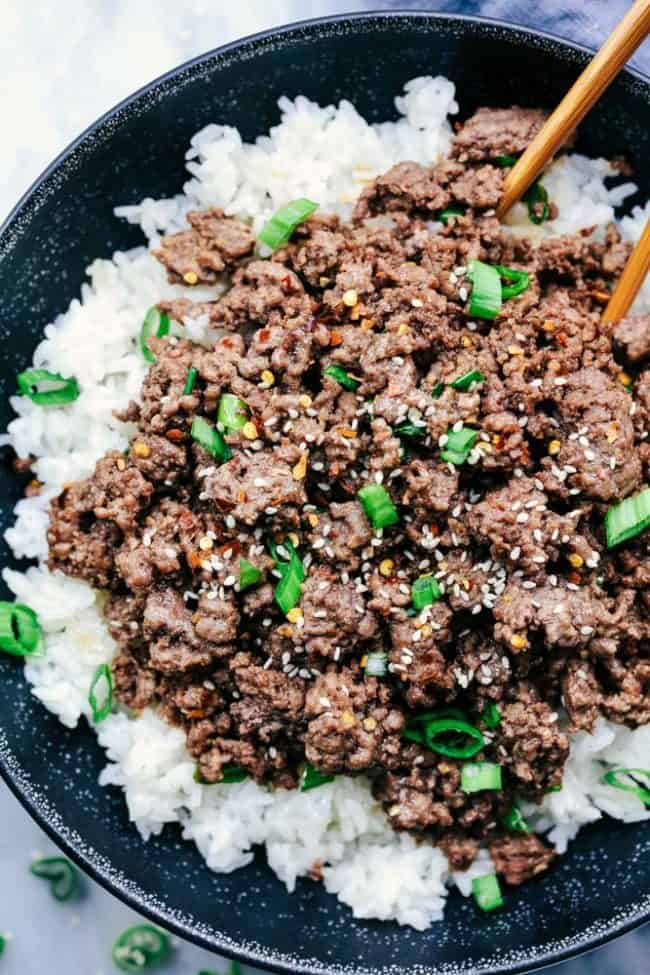

Korean Beef Rice Bowls

Description
Korean beef is a delicious, easy to make recipe that everyone will enjoy. The recipe uses simple ingredients that can be found at any American grociery store.
So here is my recipe for Korean Beef Rice Bowls!
Ingredients
- 1 pound 90% Lean Ground Beef
- 3 Garlic Cloves, minced
- 1/4 cup Brown Sugar
- 1/4 cup Reduced Sodium Soy Sauce
- 2 teaspoons Sesame Oil
- 1/4 teaspoon Ground Ginger
- 1/4 teaspoon Red Pepper Flakes
- 1/4 teaspoon Pepper
- 2 cups hot White Rice
- sliced Green Onions and sesame seeds for garnish
Instructions
- Prepare White Rice to be used
- Cook Ground Beef and Garlic on skillet over Medium Heat
- Mix Soy Sauce, Brown Sugar, Sesame Oil, Ground Ginger, Red Pepper Flakes, and Pepper in a bowl
- Pour mixture from Step 3 over Ground Beef, then mix for a few minutes
- Put rice and the Ground beef into a serving bowl, then add Onions and Sesame Seeds for garnish
- Serve immideatly
Return to Recipe List